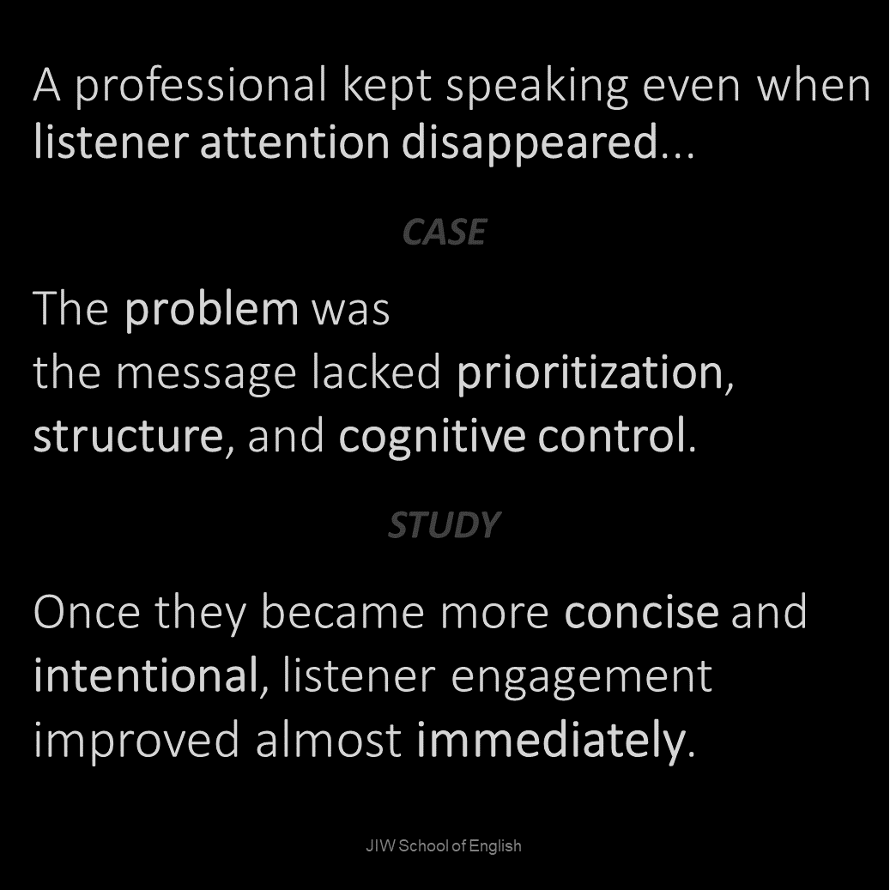
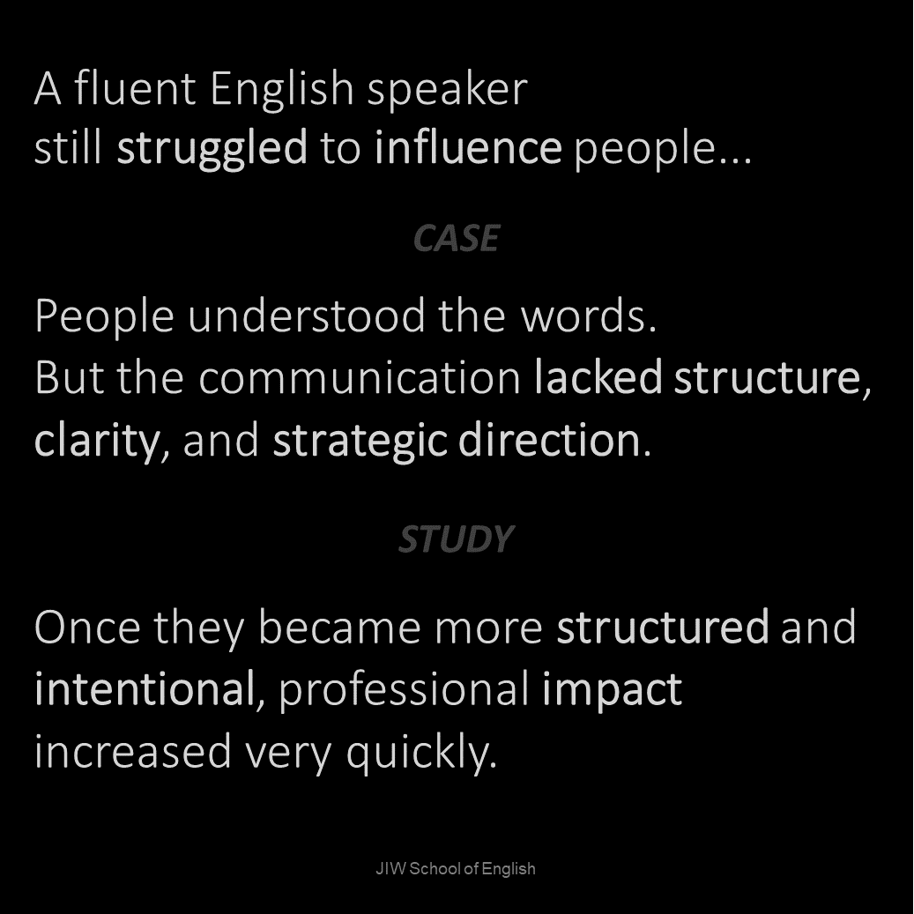
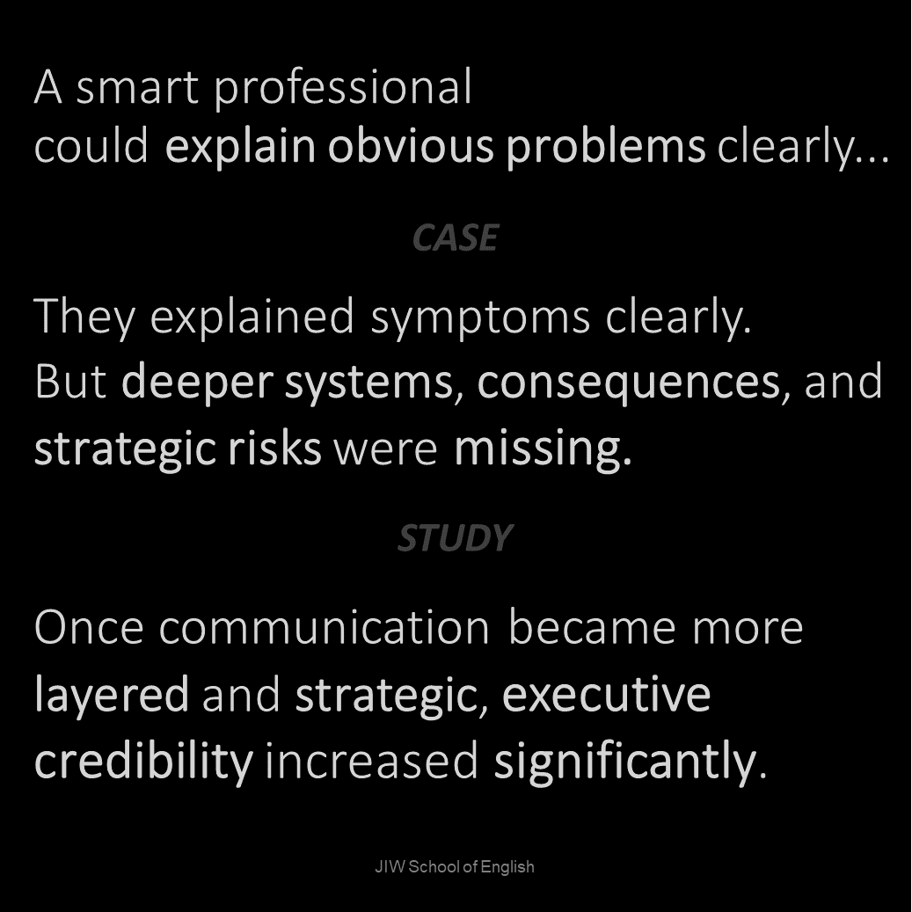

Over-explaining
The message becomes longer, but not clearer.
No Nonsense English
No generic textbooks. No one-size-fits-all lessons. No wasted time.
Tell me what you want to do — study abroad, pass EIKEN, travel, interview, present, audition, or work overseas — and we will build a practical training plan around your goal.
Free online goal discussion • Personalized training plan • Japan-based support
The real problem
Many capable Japanese professionals already have strong English, deep expertise, and valuable ideas. But under pressure, they may still sound less clear, less decisive, or less authoritative than they actually are.
The issue is often not grammar alone. It is how ideas are structured, prioritized, simplified, and adapted to the listener.
Under pressure, communication patterns become visible
The message becomes longer, but not clearer.
The listener cannot quickly identify what matters most.
Ideas remain intelligent, but insufficiently concrete.
The speaker sounds less decisive than their actual expertise.
The JIWSOE System
Organize ideas so the listener can follow your thinking in real time.
Use language that is accurate, efficient, professional, and controlled.
Control pacing, tone, delivery, pressure stability, and professional presence.
Demonstrate decision clarity, stakeholder awareness, risk intelligence, and strategic thinking.
Practical Framework Example
Strong communication is not about saying everything. It is about making your reasoning easy to follow, especially when you are under pressure.
Core response flow
“I’m not sure. It depends, so it is hard to say.”
Background: Customer trust is already fragile.
Position: We should delay the launch.
Reason: A weak release creates more long-term risk than a short delay.
Example: One major quality issue could damage renewal conversations.
Strategic ending: Fix the core issue first, then launch with confidence.
Executive Performance Diagnostic
The Executive Performance Diagnostic identifies the communication patterns currently limiting your professional impact in English.
The diagnostic examines clarity, structure, prioritization, delivery, listener impact, stakeholder awareness, and perceived executive authority. The result is a clear picture of what to stabilize first.
¥15,000 • Paid professional assessment • Limited availability
Case snapshots
A hesitant expert does not need the same training as an overconfident rambler. The diagnostic identifies the constraint before training begins.



In one case, the client already had strong English and deep expertise. The issue was abstract explanation, delayed examples, and unstable listener adaptation.
90-Day Program
The program does not begin with a fixed lesson plan. It begins with a performance profile.
The diagnostic identifies the primary authority constraint, the behaviors creating that constraint, and the initial roadmap for focused development. As performance changes, priorities are reassessed.
20 communication capabilities are evaluated.
The primary authority constraint is identified.
The roadmap targets the behaviors creating that constraint.
Priorities are updated as new patterns become visible.
Build consistent opinion → reason → example response control.
Strengthen examples, comparisons, analogies, and precision.
Update the focus based on observed progress and remaining constraints.

About
I’m John Ikeda-Williams, founder of JIW School of English. I help Japanese professionals communicate more clearly, strategically, and credibly in international business environments.
With more than 25 years of experience in Japan, plus business, government, education, and international experience, I understand both Japanese communication tendencies and the expectations of global business audiences.
Start here
You’ll leave with clear priorities, a development direction, and a written summary of your current communication constraints.
Book Executive Performance Diagnostic本当の課題
多くの優秀な日本人プロフェッショナルは、すでに十分な英語力、専門知識、価値ある考えを持っています。それでも国際的なビジネスの場では、本来よりも明確さ、決断力、存在感が弱く伝わることがあります。
課題は文法だけではありません。考えの構成、優先順位、簡潔さ、そして聞き手に合わせた伝え方です。
プレッシャーの中で、伝え方のクセが見えます
長く話しても、相手にとっては分かりやすくならない。
何が一番重要なのか、聞き手がすぐに分からない。
知的ではあるが、具体性が足りない。
実際の専門性よりも、決断力が弱く聞こえる。
JIWSOE システム
聞き手がリアルタイムで理解できるように考えを整理する力。
正確で、無駄がなく、プロらしい英語表現。
ペース、トーン、間、落ち着き、プロらしい話し方。
意思決定、ステークホルダー意識、リスク、戦略性を示す力。
実践フレームワーク例
強いコミュニケーションとは、すべてを話すことではありません。プレッシャーの中でも、相手が理解しやすい順番で考えを伝えることです。
基本の回答フロー
「場合によると思います。少し難しいです。」
背景： 顧客の信頼が不安定です。
立場： 発売は少し遅らせるべきです。
理由： 不完全な状態で出す方が、長期的なリスクが大きいからです。
具体例： 品質問題が一つ出るだけで、更新交渉に影響します。
締め： まず主要な問題を修正し、自信を持って発売すべきです。
エグゼクティブ・パフォーマンス診断
現在の英語コミュニケーションで、信頼感・明確さ・存在感を制限しているパターンを特定します。
¥15,000 • 有料専門診断 • 枠に限りがあります
ケーススナップショット
遠慮がちな専門家と、自信はあるが話が長くなりすぎる人では、必要なトレーニングは同じではありません。診断では、最初に改善すべき制約を明確にします。
高い英語力と専門性があっても、説明が抽象的になり、具体例が遅れると、聞き手は価値を受け取りにくくなります。
90日プログラム
90日プログラムは、全員に同じ内容を行う固定カリキュラムではありません。最初にエグゼクティブ・パフォーマンス診断を行い、現在の存在感を最も制限している要因を特定します。
そのうえで、具体例の出し方、説明の明確さ、プレッシャー下での反応など、実際に改善すべき行動に落とし込みます。進捗に応じて、後半の優先順位も再調整します。
意見 → 理由 → 具体例の流れを安定させます。
具体例、比較、例え、補足説明の精度を高めます。
成長した部分と残る課題を確認し、後半の焦点を調整します。